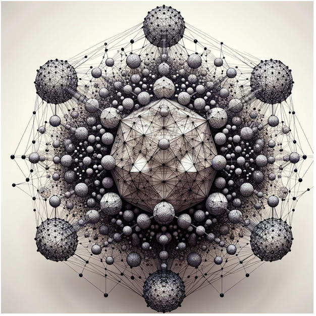

Mission Goals
Continuity of Civilization
Extend humanity's survival odds on long time scales through foresight and adaptive modeling.
Holistic Integration
Model the interdependencies of the biosphere, technosphere, econosphere, sociosphere, and infosphere.
Persistent Learning
Build a system that never resets, preserving accumulated state and knowledge to reveal long-term consequences of actions.
Transparency & Accessibility
Provide a publicly accessible interface where global communities can observe the model's progress and insights.
Collaborative Global Effort
Ensure contributions from diverse disciplines, cultures, and perspectives to capture the full spectrum of human experience.
Policy Innovation
Use reinforcement learning and system identification to extract new policy pathways from simulation outcomes.
Applied Experimentation
Test concepts of interplanetary governance and sustainability beginning with lunar base development (World System Beta) and scaling to Earth-level integration (World System Alpha).
Proxima Charter
Principles
- Persistence The system evolves continuously, never restarting from zero.
- Adaptability Policies, dynamics, and structures reform in response to new information.
- Transparency All progress remains open and observable through a public platform.
- Interdisciplinarity Contributions span sciences, engineering, philosophy, and humanities.
- Equity & Diversity Ensure representation of multiple cultures, demographics, and worldviews.
Core Functions
Model Integration
Interconnect spheres (Sociosphere, Econosphere, Technosphere, Biosphere, Infosphere).
Scenario Testing
Explore climate, technological, political, and economic futures.
Policy Evolution
Derive policies via reinforcement learning and validate them through simulation.
Survival Metrics
Track odds of long-term survival as a central barometer of civilization health.
Guidance & Action
Translate simulation outcomes into clear, actionable strategies for governments, organizations, and communities.
Cross-Sector Partnerships
Collaborate with nonprofit and for-profit entities to drive sustainable innovation.
Mission Phases
Establish the groundwork for Proxima as a global, collaborative initiative.
- Draft Proxima Charter outlining principles and goals
- Develop core architecture of the World System Model
- Launch website and knowledge hub
- Form steering council of experts
- Secure partnerships with universities and space agencies
Build and connect the foundational spheres.
- Assemble global teams for each sphere
- Develop modular simulation components
- Integrate spheres into full world system model
- Validation and testing
Scale Proxima into a persistent, evolving model accessible to humanity.
- Maintain persistent simulation
- Create crowdsourced interface for researchers and policymakers
- Transparent logging of changes and results
- Develop framework for turning results into discrete actions
Transition from lunar-scale Beta to full Earth-scale (World System Alpha).
- Expand computing capacity via distributed global clusters
- Distill simulation findings into interpretable policies
- Pilot policies in testbed regions
- Simulate interactions between Earth, Moon, and Mars systems
Ensure Proxima evolves beyond its founders, sustaining relevance across generations.
- Embed Proxima into educational systems
- Preserve infosphere with redundancy
- Position as both scientific tool and cultural project
- Rotate leadership across continents and generations
System Architecture Inspiration
Proxima integrates multiple spheres into a cohesive world system model, beginning with World System Beta (lunar development) and scaling to Alpha (Earth).
